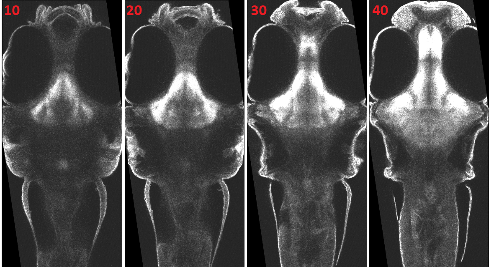
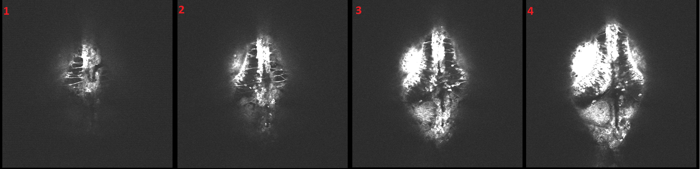
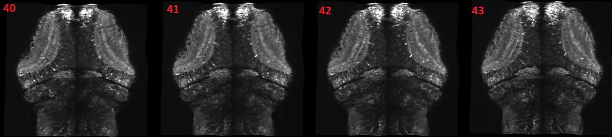
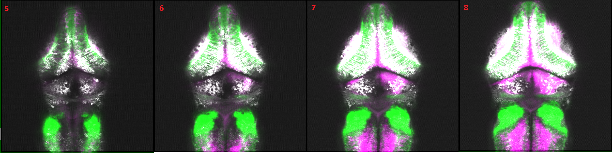

Image registration
-
This section provides a step-by-step guide to registering your new line or stain to the reference zebrafish brain(as shown in Figure 1) using the Advanced Normalization Tools
( ANTs). To get a high-quality mapping, you need to acquire high-quality 2-channel confocal stacks of your line.
As a use case, we choose the Bahl 2-photon microscopic stack (as shown in Figure 2)
and map it to the reference brain. ANTs provides a set of algorithms and metrics for the registration procedure.
It is important that you are familiar with the basics of ANTs in order to generate high-quality mappings.

Figure1: Reference zebrafish brain 
Figure2: 2P stack
The following describes the basics of ANTs to perform image registration: -
ANTs offers algorithms for linear and non-linear registration.
Linear Registration: is mainly used for the rough alignment of image data and offers the following options:- Translation
- Rigid transformation
- Similarity transformation
- Affine transformation
- BSpline SyN
- Geodesic SyN
- Greedy SyN (a lower cost variant of Geodesic SyN)
There is no standard algorithm that can solve all registration tasks. Which algorithm delivers the best results depends on many characteristics of the dataset. You should therefore try out different methods.
Similarity Metrics: Determining how similar the transformed input and the target data set are is a critical step in the registration process. There are several possible choices:- Mutal Information(MI)
- Cross-correlation(CC)
- Probabilistic Matching (PB)
- Mean Square Distance(MSQ)
- Point-set Expectation(PSE)
There is no fixed rule to select the metric; it depends on characteristics of the data sets and the chosen algorithm. Generally, Mutual Information(MI) is preferred for linear transform and Cross-correlation (CC) for fine-scale non-linear registration steps.
-
The following is the list of parameters used in the above registration script
and their detailed description:
Finally, following are the slices of the registered image stack.Parameter Name Description f Fixed or reference brain m Moving file or unregistered volume t Transformation, e.g. rigid transformation etc. Iterations(its) Iterations per scale for affine step percentage percentage of voxels sampled for evaluating the metric SyN(syn) is used only for nonlinear transformation; it denotes the iteration steps per sample and stopping criteria like 1e-8 or 1e-7 Smoothing Factor(f) This is used for smoothing the down-sampled image with a Gaussian kernel. This parameter is dependent on the shrinking factor. For example, if the shrinking factor is 2, then the smoothing factor will be 0.2.
Formula used: (shrinking factor[d] -1)*0.2.Shrinking Factor(s) is used for down-sampling an unregistered image. They are forming a kind of image pyramid for unregistered images and apply the above algorithms on each of the images in the pyramid. Shrinking factor totally depends on the size of your image stack. For example: 700x700x29 is the size of our 2P stack and 4x2x1 is the shrinking factor. It will down-sample the image by factors of 4x4x4 , 2x2x2 and 1x1x1. One should be careful in setting this parameter because it also checks length of minimum dimension i.e 29 in our case because if you downscale such a small z by a power of 8 or more. we will be left with almost nothing and a lot of resources will be wasted. It should also be a power of 2 like 2,4,8,16,32 etc. In most of the scenarios, down-sampling upto 8 is enough. 
Figure3: Registered 2P stack
-
Now, imagine that you want to do the inverse mapping, i.e. take any mapped stack of the reference brain, or an empty stack with the Randlet masks and convert it to your stack, e.g. 2-photon microscopic stack stack and overlay. This way you can instantly visualize the identity of neurotransmitters and brain regions along with the planer neural activity. Below you can see an example stack, where we used the inverted mapping to map the FishExplorer vglut stack as well as the FishExplorer gadb1 stack to the 2-photon microscopic stack. This registration reveals the pattern of excitatory and inhibitory cells within each imaged plane, as shown below.
Finally, following are the slices of the registered image stack.
